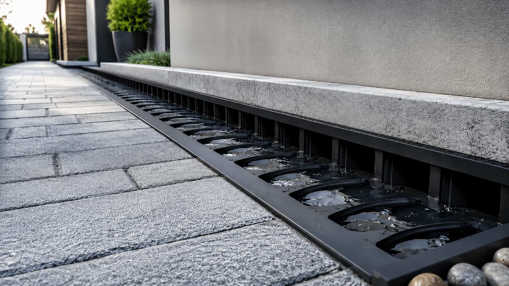

Leaf buildup
Nearby trees, seasonal shedding, and roof debris can lead homeowners to request gutter cleaning options.
Gutter service category
Start a structured request for clogged gutters, leaf buildup, debris, blocked downspouts, or seasonal cleaning.
Eavora is an independent provider-matching platform. Eavora does not clean, repair, inspect, install, sell, manufacture, or warranty gutter systems directly.
Cleaning overview
Eavora helps homeowners organize gutter cleaning-related requests involving clogged gutters, leaf buildup, roof debris, blocked downspouts, overflow points, and seasonal maintenance concerns.
Request reasons
These examples help frame the cleaning category. Final recommendations, scope, timing, pricing, and terms come from independent providers.
Nearby trees, seasonal shedding, and roof debris can lead homeowners to request gutter cleaning options.
Water spilling over the gutter edge can be connected to clogs, debris, downspout blockage, or other flow concerns.
Some cleaning requests may involve downspouts that appear blocked or do not move water away as expected.
Homeowners may start a cleaning request before or after heavy leaf seasons, storms, or rainy periods.
Homeowner control
Submitting a request through Eavora does not require hiring a provider. Review provider-supplied cleaning scope before continuing.
Before you choose
Before continuing with any provider, homeowners may ask about debris removal, downspout clearing, flushing, roofline access, cleanup, seasonal timing, whether minor observations are included, warranty or follow-up terms, licensing, insurance, and scheduling.
If debris keeps returning, gutter guards may be worth comparing. If water drains too close to the foundation, downspout and drainage may fit better.
Cleaning insight
Homeowners can describe debris level, overflow areas, downspout concerns, number of stories, roofline access, and preferred timing.
Leaves, clogs, and rain overflow points can help frame the cleaning request.

Some homeowners compare gutter guards after repeated cleaning or leaf buildup concerns.
Ready to start?
Submit the basic details and compare available provider-supplied options before deciding whether to continue.
Cleaning FAQ
These answers explain the Eavora platform role and what homeowners may want to compare.
No. Eavora is an independent provider-matching platform. Eavora does not clean, repair, inspect, install, sell, manufacture, or warranty gutter systems directly.
You can describe debris level, nearby trees, overflow areas, blocked downspouts, number of stories, roofline access, and preferred timing.
Some providers may discuss downspout clearing as part of a cleaning request, but exact scope, availability, pricing, and terms are provider-supplied.
Cleaning generally relates to removing existing debris. Gutter guards relate to provider-supplied protection or maintenance-focused upgrade discussions.
No. Submitting a request does not require hiring anyone. Homeowners decide whether to continue after reviewing provider-supplied information.